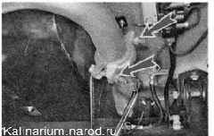
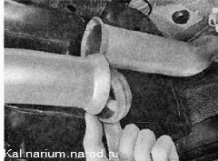
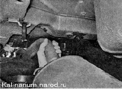

Основной глушитель - заменаДля выполнения работы потребуется смотровая канава или эстакада. Снятие 1. Подготавливаем автомобиль к выполнению работы. Внимание! Во избежание получения ожогов работу следует выполнять после остывания деталей системы выпуска отработавших газов до безопасной температуры. 2. Обрабатываем все резьбовые соединения проникающей смазкой. 3. Накидным ключом на 13 мм отворачиваем гайки двух стяжных болтов хомута основного глушителя, удерживая болты накидным ключом того же размера. 4. Снимаем хомут и извлекаем металлическое уплотнительное кольцо. 5. Снимаем подушки с кронштейнов глушителя (см. «Подвеска выпускной системы — замена подушек»). 6. Извлекаем глушитель из проема между днищем кузова и балкой заднего моста. Установка Устанавливаем глушитель в обратной последовательности. При необходимости заменяем поврежденные или потерявшие эластичность подушки подвески глушителя. |